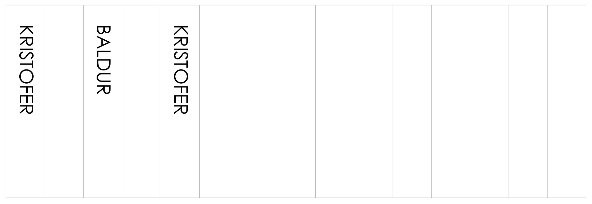

Verkefni II - KERF-próf

Verkefni fyrir hendi
Að gera tilraun með laserskera á 4 mm þykka krossviðsplötu til að meta efnistapið sem verður við skurð.
Skref 1 - Teikning
Teikna þurfti skurðarferil fyrir laserskerann. Þetta var fyrst gert í AutoCAD og svo vistað sem adxf-skrá. Svo þurfti að opna adxf-skrána í Inkscape en upp kom villa. Villumeldingunni var flett upp og lagaðist með því að breyta einni breytu í Python-skrá Inkscape. Skráin heitir dxf_input.py í Inkscape\share\inkscape\extensions og með því að breyta línu 72 úr "node = layer.add(inkex.Text(**attribs))" í "node = layer.add(inkex.TextElement(**attribs))" leystist málið.
Skref 2 - Gerð skúrðarskrár
Skráin var nú opnuð í Inkscape. Þar var línuþykktum breytt í 0.02 þar sem átti að skera en fyllt í stafina þar sem þeir yrðu bara merktir á yfirborðið. Þessi línuþykkt, 0.02 á aðeins við tiltekna laserskerann sem var í notkun en ekki alla. Loks var skráin vistuð sem pdf sem laserskerinn gat túlkað. Sjá má mynd að neðan af pdf-skránni.
Skref 3 - Laserskurður
Skránni var hlaðið inn á kubb og farið með inn í laserskurðarherbergið í Fab Lab Reykjavík. Þar var henni hlaðið inn á tölvuna og skjalið opnað. Krossviðsplata 4 mm þykk var sett í laserskerann. Þetta er sérstakur krossviður úr Handverkshúsinu sem er límdur saman með lími sem er tölvert vænna til laserskurðar en finnst í hefðbundum krossvið. Fokúsinn á lasernum var stilltur og valinn upphafspunktur. Kveikt var að loftdælunni sem er algert öryggisatriði. Þá var hægt að senda skrána í skerann og hefja skurðinn. Skurðurinn tók stuttan tíma og gekk vel. Það þurfti hinsvegar að keyra skrána af stað aftur í örskamma stund til að merkja stafina betur á viðinn. Platan og skurðarstykkin voru loks tínd upp úr tækinu.

Skref 4 - KERF-gildi
Til að meta KERF skerans þurfti að mæla hversu mikið efni hafi tapast við skurðinn. Þetta var gert með því að þjappa öllum bútunum saman í annan enda rammans og mæla bilið sem varð á hinum endanum. Þetta tókst þokkalega en erfitt var að mæla svona lítið bil með skíðmáli. Það var ákveðið að taka einn bút upp úr og mæla bilið sem myndaðist þá. Þá var hægt að fá areiðanlegt gildi sem reyndist vera 0.13 mm.